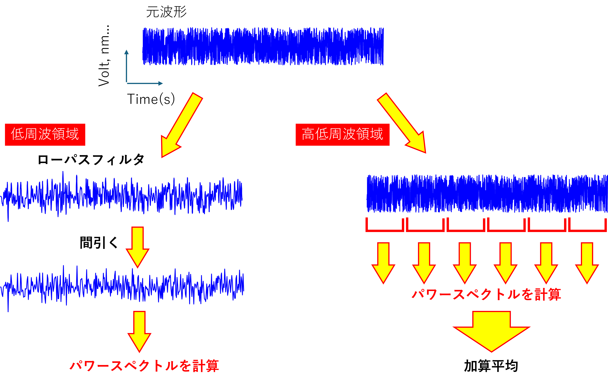

パワースペクトルの実際の作業内容-13
まとめ
今までの作業をまとめた図を作ってみました．

このように，低周波領域と高周波領域で作業を分けて考えるとわかりやすいです．
もちろん，二択である必要はなく，
100-1000 Hz
10-100 Hz
1-10 Hz
のようにわけて考えてもいいし，データ長が十分長ければ，上の二つの作業を融合してもいいです．
データを分割 → ローパス → 間引く
みたいに．
ただ，この手法，フーリエ変換を用いている方々にはそんなにメジャーではなく，検索（画像を）しても，
ここ，ここ，ぐらいしか見つかりませんでした．知っている人は使っている，知らない人は知らない，ですね．
もちろん，この手法が私のオリジナルなわけもなく，1996年の論文作成の際に，どなたかの論文，教科書を参考にさせてもらったのだと思いますが，
あのころは，DADiSP，という波形解析ソフトを使っていた記憶が．．．．